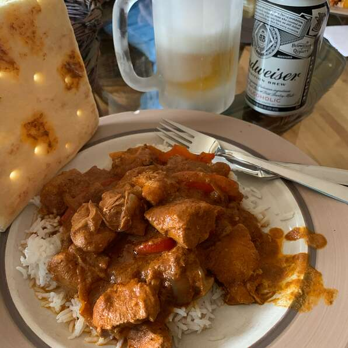

Authentic Indian Butter Chicken
Indian food is one of my favorites, so when my friend made this slow cooker version for my family we were head over heels!
I don't think I've had a Butter Chicken that I've liked more. It's wonderful to put into the slow cooker in the morning
and come home to the warm Indian spice smell....LOVE IT! Serve with basmati rice and warm naan bread.
Ingredients
- 2 tablespoons butter
- 2 tablespoons vegetable oil
- 4 large skinless, boneless chicken thighs, cut into bite-sized pieces
- 1 onion, diced
- 3 cloves garlic, minced
- 2 teaspoons curry powder
- 1 tablespoon curry paste
- 2 teaspoons tandoori masala
- 1 teaspoon garam masala
- 1 (6 ounce) can tomato paste
- 1 (6 ounce) can tomato paste
- 1 cup low-fat plain yogurt
- 1 (14 ounce) can coconut milk
- salt to taste
Directions
- Melt the butter and vegetable oil in a large skillet over medium heat.
Stir in the chicken, onion, and garlic. Cook and stir until the onion has softened and turned translucent, about 10 minutes.
Stir in the curry powder, curry paste, tandoori masala, garam masala, and tomato paste until no lumps of tomato paste remain.
Pour into a slow cooker, and stir in the cardamom pods, coconut milk, and yogurt. Season to taste with salt.
- Melt the butter and vegetable oil in a large skillet over medium heat. Stir in the chicken, onion, and garlic.
Cook and stir until the onion has softened and turned translucent, about 10 minutes. Stir in the curry powder, curry paste,
tandoori masala, garam masala, and tomato paste until no lumps of tomato paste remain. Pour into a slow cooker,
and stir in the cardamom pods, coconut milk, and yogurt. Season to taste with salt.
Return to the top of the page
Return to the Homepage